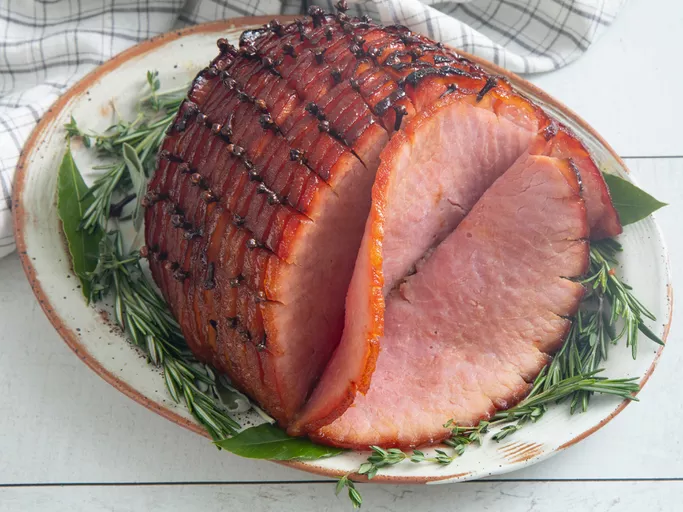

Honey-Glazed Ham

Description
Whether you're cooking for a special occasion or you just want to treat yourself to a delicious dinner, you can't go wrong with a honey-glazed ham. This simple recipe is easy to make the day-of and will impress everyone at your table.
Ingredients
- 1 (5 pound) ready-to-eat ham
- ¼ cup whole cloves
- ¼ cup dark corn syrup
- 2 cups honey
- ⅔ cup butter
Steps
- Preheat oven to 325 degrees F (165 degrees C).
- Score ham, and stud with the whole cloves. Place ham in foil lined pan.
- In the top half of a double boiler, heat the corn syrup, honey and butter. Keep glaze warm while baking ham.
- Brush glaze over ham, and bake for 1 hour and 15 minutes in the preheated oven.
- Baste ham every 10 to 15 minutes with the honey glaze. During the last 4 to 5 minutes of baking, turn on broiler to caramelize the glaze. Remove from oven, and let sit a few minutes before serving.
- Serve hot and enjoy!